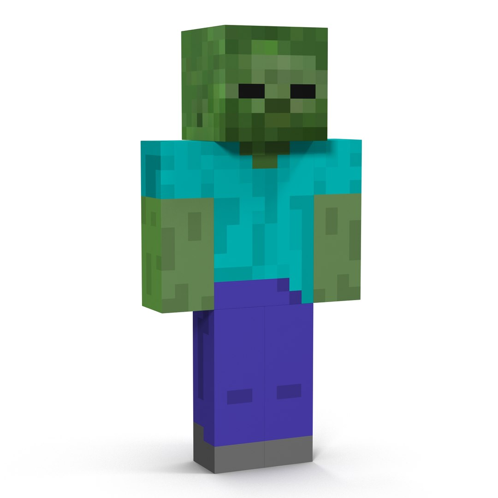

Sobre o Over World:
Em Minecraft, o "Mundo Overworld" é a dimensão principal onde a maioria dos jogadores começa suas aventuras e onde a maior parte do jogo se desenrola. É um mundo tridimensional com diversos biomas, blocos e criaturas, e é a dimensão onde a exploração, construção e combate são mais frequentes.
Mobs mais comuns no mundo Over World:
| Mobs | Nível de Dificuldade |
|---|---|
| Zumbis | Fácil |
| Aranhas | Fácil a Média |
| Esqueletos | Média a Difícil |
| Creepers | Média |
Mobs no Over World:
❮
❯

Zumbi – Lento, mas perigoso em grupo.

Aranha – Rápida e escaladora.

Esqueleto – Ataca à distância.

Creeper – Explode silenciosamente!
Dicas para este mundo:
- Ilumine bem suas construções.
- Sempre durma para evitar mobs.
- Crie muralhas ou portões para se proteger.
- Cuidado ao explorar cavernas profundas - a escuridão torna isso letal.